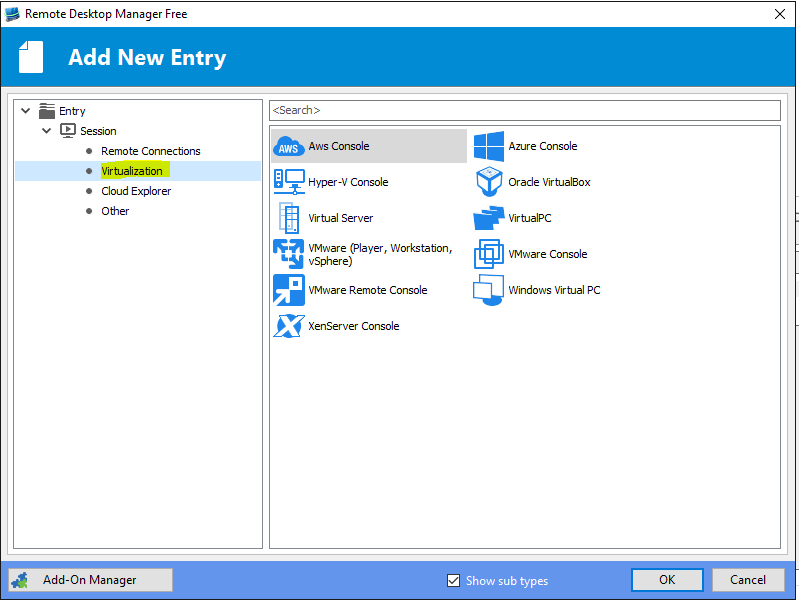

Remote Desktop Connection
Данная программа представлена во всех редакциях ОС Windows начиная с версии XP. Она достаточно проста и удобна в
использовании даже для неопытных пользователей, которые только начинают свое знакомство с виртуальными
серверами.

Основными плюсами можно выделить, следующее:
- Программа не требует установки если у вас все устройства на Windows
- Поддерживает подключение внешних устройств с Вашего компьютера на сервер
- Возможность подключить локальные диски и USB-устройства
- Используется общий буфер обмена. Позволяет напрямую копировать файлы
- Позволяет запускать неограниченное число подключений
- Возможность настройки качества цветопередачи и параметров экрана
- Настройка в клиенте автозапуска различных программ при подключении к серверу
- Высокие показатели безопасности, проверка подлинности и авторизации
- Бесплатное использование для целей администрирования
К возможным недостаткам можно указать, несколько моментов:
- необходимость покупать/арендовать лицензию RDS CALs, при
использовании сервера не только для его настройки и администрирования или в случае если требуется более двух
одновременных подключениях к серверу.
- нет возможности создания конференции